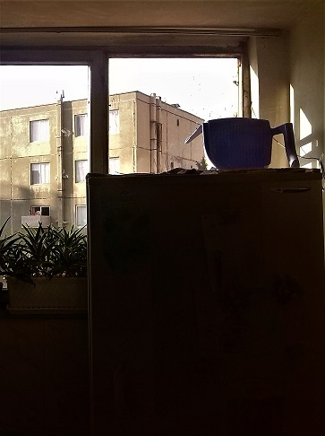

It's not just Coffee
It'sStrabucks
Qulaq as gör sənə nə deyirəm. Usta Səfər indi özündə görürsən ki, pis vəziyyətdədi. Nə danışdığını, nə etdiyini də bilmir. Onu başa düşmək çətin deyil. Onun yerinə məndə olsam belə vəziyyətə düşərəm. Məlumdur ki, o, oğlunun intihar etməsinə inanmır. Sən bu işi çox da qurdalama. Qulaq as gör sənə nə deyirəm. Usta Səfər indi özündə görürsən ki, pis vəziyyətdədi. Nə danışdığını, nə etdiyini də bilmir. Onu başa düşmək çətin deyil. Onun yerinə məndə olsam belə vəziyyətə düşərəm. Məlumdur ki, o, oğlunun intihar etməsinə inanmır. Sən bu işi çox da qurdalama.
Learn More
